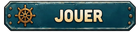

Comparaisons à l'échelle native 320×240. Les fonds sont uniquement des fonds de contrôle, jamais des pixels de boutons. Les références JOUER/PALMARÈS restent inchangées.

Pour un ×4 strict sans interpolation, voir comparatif_4x_1280x960.svg ou les PNG générés par qa.py. Pas de validation sur CYD physique.